|
Brief list of features, many of them unique:
Platforms
- Windows 32bit, 64bit
- OSX 64bit
- Linux 32bit, 64bit (SteamOS, Ubuntu..)
- Playstation 3, 4
- Xbox 360, One
- Wii, Wii U
- virtually any platform (static GI)
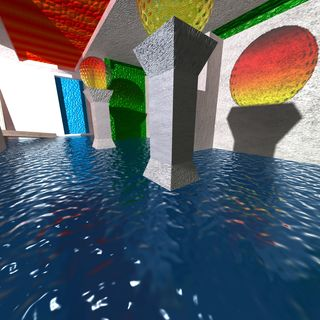
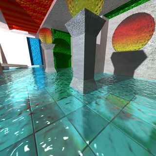
Images: realtime GI with deep water, shallow water
Global illumination
- realtime global illumination / realtime radiosity / realtime raytracing
- realtime penumbra shadows, soft shadows, RGB shadows, RGB blending
- realtime color bleeding
- dynamic lights
- dynamic objects
- dynamic skybox
- multithreaded, all cores/CPUs and GPU work at once
- offline processing ready for render farms
- everything computed in HDR
- custom scale on inputs/outputs (HDR/sRGB/other)
- scene size not limited
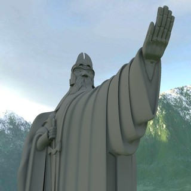
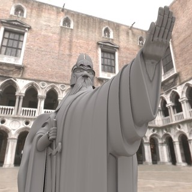
Images: Realtime GI from skybox - LDR, HDR
Light source formats (inputs)
- spot/point/directional lights
- area lights
- projected texture, projected video, projected video capture
- environment (LDR, HDR skyboxes, 360 degree panorama/video/capture, blend of environments)
- emissive materials (LDR, HDR textures, video, video capture)
Lighting computed (outputs)
- lightmap
- directional lightmap for radiosity normal mapping/RNM
- ambient map
- ambient occlusion map, global ambient occlusion
- diffuse environment map
- specular environment map
- bent normal map
- vertex buffer with lighting, ambient occlusion or bent normals
- illumination of triangle or vertex
- illumination at ray scene intersection
- any combination of direct/indirect/global illumination
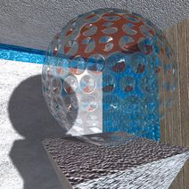
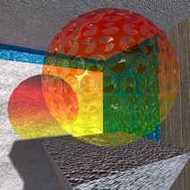
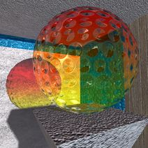
Images: Alpha blending, RGB blending+RGB shadows, Fresnel blending+Fresnel shadows
Renderers
- integrates with external renderers
- includes modern OpenGL plugins based renderer
Stereo rendering
- Oculus Rift integration
- interlaced
- side-by-side, top-down
360 degree panorama rendering
- equirectangular
- little planet
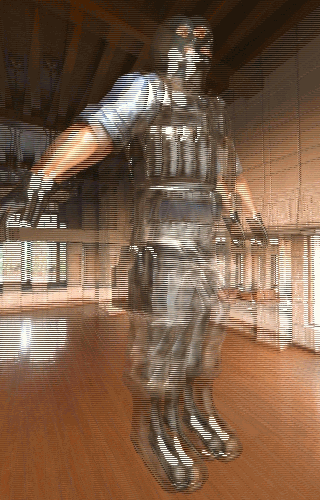
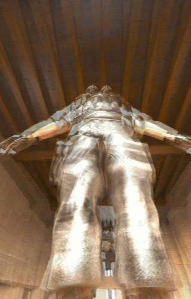
Images: Interlaced stereo, requires interlaced stereo display, native resolution, scroll to swap eyes
Scene formats
- Collada ( *.dae )
- Gamebryo LightSpeed 3.x
- Gamebryo 2.6 ( *.gsa )
- Unreal Engine 3
- Lightsprint ( *.rr3 )
- 3D GameStudio ( *.mdl;*.hmp )
- 3D Studio Max ( *.3ds;*.ase )
- AC3D ( *.ac )
- AutoCAD ( *.dxf )
- Autodesk FBX ( *.fbx )
- Biovision ( *.bvh )
- Blender ( *.blend )
- BlitzBasic ( *.b3d )
- CharacterStudio ( *.csm )
- DirectX ( *.x )
- GL Transmission Format ( *.glTF, *.glB )
- id Software
- Quake I ( *.mdl )
- Quake II ( *.md2 )
- Quake III ( *.md3,*.bsp,*.pk3 )
- Doom 3 ( *.md5mesh )
- Return to Castle Wolfenstein ( *.mdc )
- Industry Foundation Classes ( *.ifc;*.ifczip )
- Irrlicht ( *.irr;*.irrmesh;*.xml )
- Izware Nendo ( *.ndo )
- LightWave ( *.lwo;*.lws )
- MODO ( *.lxo )
- Neutral File Format ( *.nff;*.enff )
- Material and Geometry Format ( *.mgf )
- Milkshape 3D ( *.ms3d )
- Object File Format ( *.off )
- Ogre 3D ( *.mesh.xml;*.material )
- PovRAY ( *.raw )
- Quick3D ( *.q3o;*q3s )
- Raw Triangles ( *.raw )
- Sense8 WorldToolkit ( *.nff )
- Stanford Polygon Library ( *.ply )
- Starcraft 2 ( *.m3 )
- Stereolithography ( *.stl )
- Terragen Terrain ( *.ter )
- TrueSpace ( *.cob;*.scn )
- Unreal ( *.3d;*.uc )
- Valve ( *.smd,*.vta )
- Wavefront ( *.obj )
- XGL ( *.xgl;*.zgl )
- others ( *.acc;*.ask;*.mot;*.prj )
- framework for custom formats
- complete source code
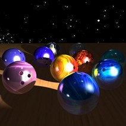
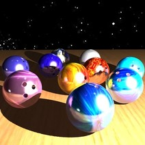
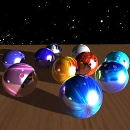
Images: Realtime GI from lights - spot, point, directional
Texture formats
- JPG, PNG, HDR, EXR, DDS, JPEG-2000, TGA, BMP, TIF, GIF, PCX,
PSD, JNG, XBM, XPM, IFF, MNG, PBM, PGM, PPM, PFM, CUT, SGI,
RAW, ICO, PICT, RAS, WBMP, KOALA, PhotoCD...
- cube textures
- 96bit and 128bit float textures
Video formats
- AVI
- WMV
- ASF
- MPG, MPEG
- any other format with codec installed (MOV, MKV etc)
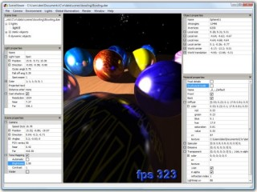
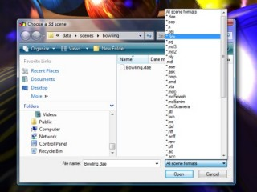
Images: Lightsprint scene viewer/editor
Materials
- supports all types of materials
- diffuse/specular/emissive/opacity/normalmap slots
- video files and live video capture can be used in all slots
- water with waves and reflection
Unwrap
- imports your unwrap
- automatically builds new unwrap
Tangent space
- imports your tangent space
- automatically builds new tangent space
Realtime/precomputed
- supports realtime illumination
- supports precomputed illumination
- supports mix of realtime and precomputed illumination
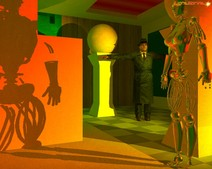
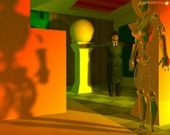
Images: Realtime shadows - hard, soft, penumbra.
Ray-Mesh collisions
- up to 200x faster than commercial physical engines
- up to 10x smaller memory footprint than commercial physical engines
- multithreaded
- up to 4294967295 vertices in mesh
- up to 1073741824 triangles in mesh
- triangle lists/strips/indexed/nonindexed
- floats, doubles, halfs, ints, shorts
- custom mesh data structures without data duplication
- uniform scaling, non uniform scaling
- singlesided tests, doublesided tests
- number of sides defined by material
- return one or gather all collisions
- custom action at collision
- returns intersection distance, 2D and 3D position
- returns normal, plane and face side that was hit
- high precision, higher than commercial physical engines
- high reliability, 7 years under heavy load
|
|
{kind=link}
{kind=link}
{kind=link}
{kind=link}
{kind=link}
{kind=link}
{kind=link}
{kind=link}
{kind=link}
{kind=link}
{kind=link}
{kind=link}
{kind=link}
{kind=link}
{kind=link}